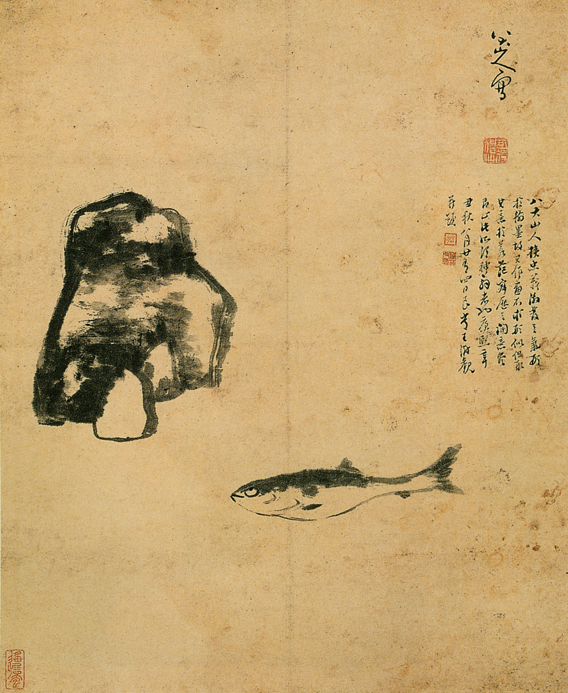
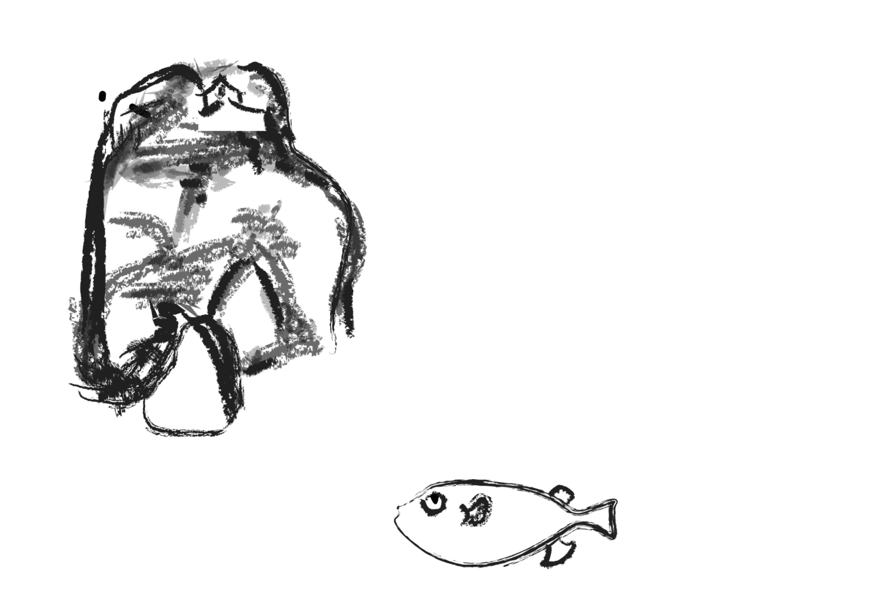

The Loop | A Tale from Ancient China
The animation was made in July 2016 when I was participating Summer Session in Yale University.
The story is adapted from a tale in ancient China: There is a fish swimming in a lake, which is part of a painting. The painting is hanging on a wall of a room in a house, and the house is built on a mountain, which happens to be a part of the painting in the very first beginning.
The charactor is from a painting made by my favorate artist Zhu Da (Bada Shanren)
, who became a Buddhist monk in 1648 after the Ming Dynasty collapsed. In his paintings, usually in ink monochrome, such creatures as fishes are given a curious, glowering, sometimes even perverse personality.

|The original painting of Zhu Da

|Sketch of a scene in video
| Thank you: Johannes DeYoung